Not from the outside in — from the inside out
A disruption in the traditional learning landscape. Neither a training, a leadership course, nor a wellness retreat. A unique space for those ready to peel back the layers, question their beliefs, and discover who they are underneath everything they've been taught to be.
A deliberate slowdown — not to promote passivity, but to foster a deeper connection with our authentic selves. It disrupts ingrained patterns and reminds us of the importance of being real.
Let go of what was never truly yours. The inherited beliefs, the performed roles, the survival patterns that once protected you but now constrain you. This is not about acquiring new knowledge — it's about releasing what doesn't serve.
Remove the false roles and reveal the raw self. The mask didn't protect you — it protected your image. Beneath it, you are still here. This is the courage to be seen without the costume.
Not by becoming someone else, but by returning to who you've always been. This journey isn't about adopting new personas; it's about stripping away false layers to reveal the authentic individual that has always resided within.
These aren't steps to be followed, but invitations to embrace different kinds of honesty. You don't move through them once — you cycle through them your entire life.
The journey inward, before leading others.
LEAD begins with stillness. Not taking charge — but learning to listen. You'll awaken to what's been running you, and start choosing differently, from clarity rather than default.
"This is not about leading others first. It's about leading yourself — through presence, participation, self-awareness, and choice."
The art of presence under pressure.
STAY teaches you to remain. With discomfort. With emotion. With the truth that just surfaced. Most of us escape the moment we feel something — this pillar trains us to stay.
"We settle not to escape reality — but to meet it from the ground."
Reclaiming authenticity, vision, and purpose.
RISE isn't about climbing. It's about alignment — with your values, your fire, your service, and your embodiment. This is where vision meets action, and where you become the message you carry.
"Rooting is how we rise with clarity — not louder, but truer."
Dismantling what no longer serves.
BURN is about disruption. You'll break what's no longer true, unmask the roles you've played, reveal something raw — then nourish what remains. This isn't collapse. It's transformation.
"Breakage isn't failure — it's the beginning of something real."
Becoming a safe space for others to heal and transform.
HOLD is where the work becomes real. You'll learn to truly listen, to offer space without rescuing, to lean when you're tired, and to deepen — not for intensity, but for integrity.
"To hold is to remain. To witness without rushing. To support without ego. To return — even when it would be easier to retreat."
A 10-week immersive training for individuals ready to lead with presence, truth, and depth. Not about teaching — about holding space, embodying truth, and facilitating transformation from the inside out.
"You are not here to teach. You are not the authority. You are here to hold the container — with presence, with steadiness, and with care."
Each session follows a simple but profound rhythm. Not to fix, but to hold. Not to perform, but to be present.
Certification is not about performance. It's about embodiment. Demonstrating that you can hold space with presence, integrity, and care.
I left not feeling merely motivated, but deeply "undone" in the most positive sense. I gained clarity, courage, and a profound sense of groundedness.
The focus shifts from external validation to internal alignment. I became quieter, more intentional, and more confident in my authentic self.
This isn't about being "good" at listening. It's about noticing when we can't. That awareness alone changed everything for me.
We don't promise transformation. We promise a safe and supportive space for you to confront your truth. And when that happens, transformation becomes inevitable.